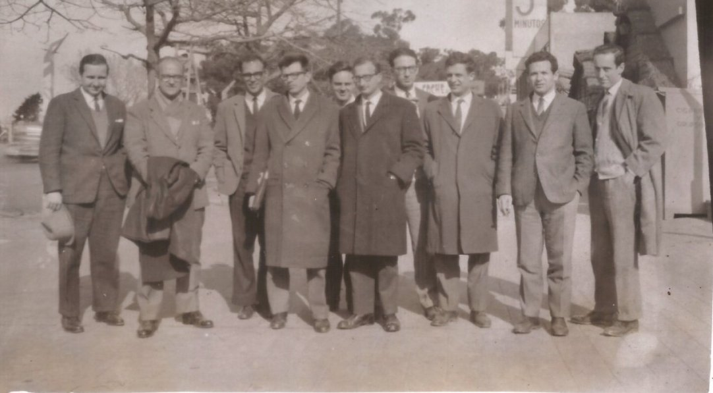
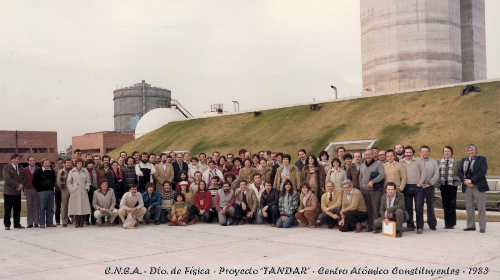

Historia
De la División de Física Nuclear Teórica, creada hacia 1970, al Departamento de hoy: la historia contada por Ernesto Maqueda.
El Departamento de Física Teórica de Interacciones Fundamentales y Sistemas Complejos nació hacia 1970 como División de Física Nuclear Teórica de la CNEA. Sus raíces están en el grupo de física nuclear teórica que Daniel Bes formó en la Facultad de Ciencias Exactas y Naturales de la UBA a comienzos de los años sesenta, y que se dispersó tras la «Noche de los bastones largos» de 1966. A partir de 1968, con el impulso de Emma Pérez Ferreira, varios de sus integrantes volvieron al país y se reunieron en el Departamento de Física Nuclear de la CNEA: primero Ernesto Maqueda, después Roberto Perazzo, Willy Dussel y, en 1971, el propio Bes. En 1975 se sumó Marcos Saraceno.
El grupo creció junto con el Proyecto TANDAR: sus miembros dictaron buena parte de los cursos del Programa de Capacitación, organizaron los Workshops de Física Nuclear y en 1983 fueron los primeros en mudarse al nuevo edificio del acelerador, donde el Departamento sigue funcionando. Del Programa de Doctorado salieron decenas de tesis, y los temas fueron ampliándose desde la estructura nuclear y las reacciones hacia el caos cuántico, la física hadrónica y de quarks, la materia condensada y los sistemas complejos. Hoy el Departamento reúne investigadores, becarios e investigadores consultos. La historia detallada que sigue fue escrita por Ernesto Maqueda.
- 1961Bes forma el grupo de física nuclear teórica en Exactas (UBA)
- 1966Noche de los bastones largos: el grupo se dispersa en el exterior
- 1968Maqueda vuelve y empieza la teoría nuclear en la CNEA
- c. 1970Se crea la División de Física Nuclear Teórica
- 1971Vuelve Daniel Bes
- 1975Ingresa Marcos Saraceno; se decide el acelerador TANDAR
- 1983Mudanza al edificio del TANDAR
- 1986Inauguración oficial del Laboratorio TANDAR
- 2007Las divisiones de la CNEA pasan a llamarse departamentos
Texto de Ernesto Maqueda, con la colaboración de Marcos Saraceno. Se procuró mantener un tono impersonal. Los nombres de la División y del Departamento cambiaron a lo largo de los años; en el texto se usan indistintamente y se abrevian siempre DFNT.1
Prehistoria
Para entender por qué hubo un grupo de física nuclear teórica en la CNEA hay que remontarse a 1961 y a la Facultad de Ciencias Exactas y Naturales (FCEN) de la UBA.
En 1960 Daniel Bes había vuelto a la CNEA después de una estadía en Copenhague, donde trabajó con Ben Mottelson y Aage Bohr (premios Nobel 1975) en el modelo unificado del núcleo. Bes había ingresado a la CNEA en 1954 y había ido a Dinamarca con una beca de la institución.
En 1961 la FCEN llamó a concursos de profesores; Bes ganó un cargo y pasó a trabajar allí. En esos años crecía el régimen de dedicación exclusiva, sobre todo en Exactas.
Convocados por Juan José Giambiagi, Pedro Federman, Ernesto Maqueda y Andrés Zuker se presentaron al concurso de ayudantes y fueron los primeros discípulos de Bes. En los años siguientes se sumaron Ricardo Broglia, Guillermo (Willy) Dussel y Roberto Perazzo, y también Anthony Evans, un físico inglés que había publicado con David Thouless (futuro premio Nobel, 2016) uno de los trabajos fundamentales de la mecánica cuántica de muchos cuerpos.
Junto con el grupo de física nuclear teórica se formaron en la UBA otros grupos, teóricos y experimentales, en partículas elementales, bajas temperaturas, astronomía, plasmas y rayos cósmicos, entre otros temas (Juan Roederer también había pasado de la CNEA a la UBA). Entre 1958 y 1966 existía la convicción de que la brecha con los centros más desarrollados se podía cerrar.

Bajo la dirección de Bes se doctoraron en 1964 Ricardo Broglia (Movimientos colectivos nucleares y el problema de muchos cuerpos en la capa N = 2 del oscilador armónico), Ernesto Maqueda (Tratamiento exacto de las interacciones residuales nucleares) y Andrés Zuker (Vibraciones gamma en núcleos deformados y la interacción rotación–vibración), y en 1967 Willy Dussel (Efectos de términos anarmónicos de la fuerza cuadrupolar en los isótopos de Cd). Roberto Perazzo se doctoró en 1966 con la dirección de Anthony Evans (La aproximación de fases al azar para dos partículas y su aplicación a núcleos livianos).
La idea era que los integrantes del grupo se perfeccionaran en el exterior en los temas de punta de la física nuclear. Pedro Federman fue a doctorarse al Instituto Weizmann (Rehovot, Israel) con Igal Talmi, especialista en el modelo de capas. Ernesto Maqueda fue a la Universidad de Sussex (Inglaterra) a trabajar con J. P. Elliott, quien había introducido el grupo SU(3) para describir rotaciones y vibraciones nucleares en el marco del modelo de capas. Andrés Zuker fue a Oxford, donde se especializó en cálculos de estructura nuclear; Ricardo Broglia, a Copenhague; Willy Dussel, a Pittsburgh, y Roberto Perazzo, a Minneapolis.
La diáspora
El 29 de julio de 1966, un mes después del golpe de Estado y de la intervención de las universidades, ocurrió la «Noche de los bastones largos»: la policía desalojó con violencia las facultades ocupadas de la UBA. Le siguieron la renuncia masiva de docentes de la FCEN y del éxodo. Entre los golpeados por la policía estaba Warren Ambrose, matemático y profesor del MIT; su carta al New York Times dio al episodio trascendencia internacional, y la solidaridad del mundo académico facilitó la emigración de profesores y alumnos avanzados.
Los que estaban afuera se quedaron afuera:
- Daniel Bes se fue como profesor a Pittsburgh y luego a Minneapolis.
- Anthony Evans se fue a Sussex.
- Willy Dussel fue contratado en Pittsburgh y Roberto Perazzo en Minneapolis.
- Pedro Federman, al terminar su doctorado en Rehovot, fue contratado en Harwell (Inglaterra).
- Ernesto Maqueda pasó de Sussex al Instituto Tecnológico de California (Caltech), y Andrés Zuker, de Oxford al Laboratorio de Brookhaven (EE. UU.).
El retorno
Después de 1966 la CNEA procuró rescatar algo de lo que había destruido la intervención de la UBA: incorporó a algunos investigadores jóvenes, y el Departamento de Física Nuclear dio continuidad a los tradicionales coloquios de física de la FCEN.
El Departamento de Física Nuclear en 1968
En aquel momento los «departamentos» de la CNEA equivalían a las actuales gerencias, y las «divisiones», a los actuales departamentos: en 2007 una transformación «galileana» les cambió el nombre a todos sin cambiarles la jerarquía relativa. El Departamento de Física Nuclear es el antecedente de la actual Gerencia de Investigación y Aplicaciones (GIyA); en 1968 lo dirigía Emma Pérez Ferreira.
El Departamento funcionaba en la Sede Central de la CNEA,2 donde estaban los laboratorios y las instalaciones experimentales, y tenía tres divisiones: Espectroscopía Nuclear (DEN), Reacciones Nucleares (DRN) y Partículas Elementales (DPE).
División de Reacciones Nucleares (DRN)
La DRN se dedicaba a experimentos con el haz de deuterones de 28 MeV del sincrociclotrón. Inaugurado en 1954, era entonces una máquina de nivel mundial; con él se habían descubierto, entre otros logros, veinte radioisótopos3 y el diprotón.4 Para 1968 ya se había extraído un haz apto para reacciones de transferencia y se empezaba a estudiar la compra de un acelerador más moderno para iones pesados (un ciclotrón isócrono de 130 MeV).
División de Espectroscopía Nuclear (DEN)
La DEN contaba con dos espectrómetros beta y un separador de masas. También usaba un multiplicador de tensión Cockcroft–Walton que aceleraba protones hasta 1,2 MeV. Antes de la diáspora, Daniel Bes había sugerido usar los neutrones producidos con ese acelerador para estudiar isótopos alejados de la línea de estabilidad.

División de Partículas Elementales (DPE)
Hasta comienzos de los años sesenta la DPE tenía dos actividades: radiación cósmica y placas nucleares. Radiación cósmica, dirigida por Juan Roederer, era uno de los temas que distinguían internacionalmente a la CNEA, y en placas nucleares también se habían hecho contribuciones importantes.

Empieza a formarse el grupo de física nuclear teórica
En enero de 1968 Ernesto Maqueda, que había pasado de Sussex a Caltech, decidió volver a la Argentina y aceptó el cargo que le ofrecían en la División de Reacciones Nucleares.
Tras su llegada, Olga Dragún, que había ingresado en la DRN después de la diáspora de Exactas y había desarrollado métodos para medir la energía del haz de deuterones, pasó a trabajar en cálculos microscópicos y mecanismos de reacciones nucleares.
Jorge Testoni, físico experimental de la DRN, participó en el trabajo de Dragún y Maqueda sobre reacciones de transferencia de dos nucleones en la capa p, y así inició una colaboración con los teóricos que se prolongaría por mucho tiempo.
También ingresaron para trabajar en física nuclear teórica Silvia Reich, como becaria de la CNEA, y Pedro Ripa Alsina, con una beca del Consejo Nacional de Investigaciones Científicas y Técnicas (CONICET).
A mediados de 1969 volvieron Roberto Perazzo, a la DRN, y Willy Dussel, a la DEN. En 1970 Hugo Sofía, que había ingresado para trabajar en el sincrociclotrón, también se pasó a la teoría.
Más allá de la división en la que revistaba cada uno, todos se dedicaban a la teoría y, en general, trabajaban en colaboración.
En el regreso de quienes estaban en el exterior tuvo mucho que ver Emma Pérez Ferreira, una persona ejemplar a la hora de buscar y encontrar los medios para lograr condiciones de trabajo que permitieran retener y recuperar a científicos y tecnólogos.
La División de Física Nuclear Teórica
Fin de la División de Partículas Elementales
A comienzos de los años sesenta, el grupo de radiación cósmica se había mudado a la FCEN para integrar un instituto conjunto de la CNEA, la UBA y el CONICET, que con el tiempo se convertiría en el IAFE5 (parte de su personal siguió perteneciendo a la CNEA).
Hacia 1968–69, el grupo de placas nucleares necesitaba un reequipamiento de al menos un millón de dólares de la época para volver a ser competitivo, y aun así dependería de placas irradiadas en instalaciones del exterior (Brookhaven), no siempre en los experimentos de mayor interés. Emma Pérez Ferreira decidió entonces, aunque era su propio tema de investigación, discontinuar la actividad en partículas elementales y concentrar los esfuerzos en espectroscopía nuclear, reacciones y teoría. Las pocas personas que quedaban en la DPE fueron reubicadas en otros sectores de la CNEA.
Se crea la División de Física Nuclear Teórica
Emma Pérez Ferreira aprovechó el casillero del organigrama que había dejado vacío la División de Partículas Elementales para crear la División de Física Nuclear Teórica, en la que pasaron a revistar Olga Dragún, Willy Dussel, Ernesto Maqueda, Roberto Perazzo, Silvia Reich y Hugo Sofía. Maqueda fue designado jefe.
El paso siguiente fue conseguir un lugar adecuado para todo el grupo. Gracias a la generosidad de los experimentales, en el bloque central del edificio de Libertador 8250 se obtuvieron varias oficinas alrededor de un aula y sala de reuniones con pizarrones en «3π» (en casi todas las paredes): el antecedente de la actual sala de reuniones de los teóricos en el edificio del TANDAR.
Primeros trabajos
- Olga Dragún se doctoró con la dirección de Ernesto Maqueda (Estudio sobre reacciones con transferencia de dos partículas en la capa p).
- Silvia Reich se doctoró con la dirección de Roberto Perazzo (Tratamientos colectivos de la fuerza de apareamiento).
- Pedro Ripa Alsina concretó en poco tiempo una investigación sobre la determinación de los elementos de matriz de la interacción nucleón–nucleón6 y luego siguió su formación en el exterior.
- Willy Dussel y Roberto Perazzo trabajaron en el tratamiento del modelo colectivo de Bohr y del hamiltoniano de apareamiento (pairing).
- Dragún, Dussel, Maqueda y Perazzo desarrollaron el formalismo de la reacción de transferencia de partículas alfa y propusieron un experimento (d, 6Li) que se realizó con el haz de deuterones de 27,2 MeV del sincrociclotrón.7
Los años setenta
El regreso de Daniel Bes
En 1970 le tocó a la Argentina organizar la Escuela Latinoamericana de Física (ELAF), que se hacía cada año desde 1959, alternando entre México, Brasil y la Argentina, con cursos dictados por expertos internacionales en temas de actualidad. La de 1970 tuvo dos sedes: física nuclear en la CNEA, en Buenos Aires, y física del sólido, partículas y campos en la Universidad Nacional de La Plata.
Daniel Bes fue invitado como docente de la Escuela, y entonces decidió volver. Como cuenta en su reseña autobiográfica,8 él y su esposa evaluaban la posibilidad de «no seguir siendo inmigrantes» y, aunque estaba «a gusto y con tenure en la Universidad de Minnesota», fue importante «el hecho de que parte del grupo nuclear de la UBA se hubiese reconstituido». En 1971 se reincorporó a la CNEA. Con él vino por un par de años Nicholas C. Kraus,9 uno de sus alumnos de doctorado en Minnesota.
Otros regresos e incorporaciones
En 1970 volvió de Brookhaven Mario Mariscotti, que también había formado parte de la diáspora de 1966, para incorporarse como experimental a la DRN. En los Estados Unidos había incursionado en temas teóricos (por ejemplo, un modelo para describir las bandas rotacionales de los núcleos par-par10), lo que permitió una interacción valiosa con el grupo teórico.11
Entre 1974 y 1976 trabajó a tiempo parcial el físico rosarino Roberto Liotta, que había estado en el Instituto Niels Bohr de Copenhague y colaborado con miembros de la DFNT.
En 1975 se presentó la oportunidad de incorporar a Marcos Saraceno, que en 1966 había ido al MIT, donde se doctoró. Como otras veces en la CNEA, había restricciones para incorporar personal en actividades «ajenas a la tecnología nuclear». El presidente de la institución, el almirante Oscar Iraolagoitía, dijo que la única posibilidad era que estudiara reactores de torio; el resultado de ese estudio se publicó como Informe Técnico de la CNEA.12
Cambios en la estructura
En 1973, con el cambio de gobierno, el almirante Oscar Iraolagoitía reemplazó en la presidencia de la CNEA al almirante Oscar Quihillalt, que había ocupado el cargo durante dieciséis años, en dos períodos (desde 1955, con una interrupción entre 1958 y 1960). Iraolagoitía ya había sido presidente de la institución durante el gobierno de Juan Domingo Perón.
La nueva administración creó una Dirección de Área de Investigación, Desarrollo y Servicios, a cargo de Emma Pérez Ferreira. Ernesto Maqueda pasó a ser jefe del Departamento de Física Nuclear, y Roberto Perazzo, jefe de la División de Física Nuclear Teórica. En 1975 Mario Mariscotti reemplazó a Maqueda como jefe del Departamento.
En 1974 las divisiones de Reacciones Nucleares y de Espectroscopía Nuclear se habían unificado en una División de Física Nuclear Experimental. En 1976 el Departamento de Física Nuclear se convirtió en Departamento de Física, al sumarse como División de Física del Sólido una parte del antiguo Departamento de Física Atómica y Molecular.
Modalidad de trabajo y algunos temas de investigación
El grupo completo se reunía periódicamente y en esas reuniones se exponían los temas de interés. En uno de los pizarrones había una tabla con los temas en las filas y los nombres de los miembros de la División en las columnas, y cada uno marcaba en qué tema quería participar: irónicamente se la llamaba el «chantómetro».
Algunos de los temas de investigación fueron:
- el hamiltoniano de apareamiento: tratamiento colectivo, vibraciones y rotaciones, análisis en el modelo de capas;
- las reacciones de transferencia de dos y de cuatro nucleones;
- la teoría de campos nuclear, desarrollada en Buenos Aires con la participación de Ben Mottelson (Copenhague), que tuvo gran repercusión porque resolvía el problema de la sobrecompletitud en las descripciones que incluyen a la vez modos elementales colectivos y de cuasipartículas.13
Hugo Sofía se doctoró en 1974 con la dirección de Daniel Bes (Teoría de campos nucleares). Sin pertenecer formalmente a la DFNT, Armando Ferrero se doctoró en 1975 con la dirección de Ernesto Maqueda (Reacciones (d, 6Li): análisis con canales acoplados).
El TANDAR
En 1975, para actualizar el equipamiento experimental, se decidió impulsar la compra de un acelerador de iones pesados, que con el tiempo se llamaría TANDAR. El proyecto incluyó la selección, compra, construcción e instalación del acelerador y sus equipos periféricos, y la construcción de un edificio para las oficinas del entonces Departamento de Física, en un predio de cuatro hectáreas cedido por el INTI, junto al Centro Atómico Constituyentes.
La construcción del acelerador comenzó en diciembre de 1979, cuando se cumplían 25 años de funcionamiento del sincrociclotrón. El primer haz se obtuvo en noviembre de 1984, y en 1986 se publicaron los primeros trabajos hechos con el acelerador.

A comienzos de 1983, al terminarse las oficinas del nuevo edificio, se mudaron las divisiones de Física Nuclear Experimental y Teórica, empezando por los teóricos. En el nivel +63 de la torre del acelerador se habilitó un aula donde se hacían los coloquios semanales de física y los workshops anuales de física nuclear.
Hasta febrero de 1990 el predio del TANDAR estuvo separado del resto del Centro Atómico Constituyentes y tenía un régimen de acceso propio, parecido al de una institución científica y académica; ese año las autoridades de la CNEA decidieron terminar con esa independencia.
Mario Mariscotti fue jefe del Departamento de Física entre 1975 y 1982. Emma Pérez Ferreira fue jefa del Proyecto TANDAR y, desde 1982, también del Departamento. Entre 1984 y 1989 Ernesto Maqueda fue jefe del Departamento y Edgardo Ventura, jefe del Proyecto TANDAR.
El Programa de Capacitación del Proyecto TANDAR
Cuando se aprobó el proyecto, y teniendo en cuenta que la nueva instalación iba a necesitar mucho más personal científico, Ernesto Maqueda, a partir de una idea de Marcos Saraceno, propuso organizar un Programa de Capacitación para incorporar y formar a unos 15 a 18 licenciados en física. La dirección del proyecto aprobó la idea y le dio la misma prioridad que a la instalación experimental. Se formó un comité ad hoc integrado por Ernesto Maqueda,14 Gerardo García Bermúdez y Marcos Saraceno.
Durante tres años seguidos se seleccionaron candidatos mediante exámenes y entrevistas, con exigencias equivalentes a las de las admisiones de las graduate schools de primer nivel, porque la capacitación incluía estadías en el exterior para adquirir experiencia en temas que luego se desarrollarían con la nueva instalación. En total ingresaron dieciocho físicos.15 Los teóricos dictaron la mayoría de los cursos de los dos primeros años. El programa (las vacantes y el financiamiento) fue posible gracias a la capacidad de gestión y el ingenio de Emma Pérez Ferreira y Edgardo (Egui) Ventura, y al apoyo del jefe del Departamento, Mario Mariscotti.
Aunque el objetivo era formar físicos experimentales para la División de Física Nuclear Experimental, también pasaron por el programa María Elena Spina, Jorge Dukelsky y Alejandro Fendrik, que se incorporaron a la DFNT. Spina se doctoró en Heidelberg (Alemania) con la dirección de Hans Weidenmüller (Colectividad y estadística en reacciones profundamente inelásticas con iones pesados, 1983); Dukelsky (Aproximación de la serie principal, 1981) y Fendrik (Estudio fenomenológico y microscópico de excitaciones de cuatro partículas en núcleos pesados, 1986) se doctoraron con la dirección de Willy Dussel.
Aunque no integró formalmente la DFNT, Aníbal Gattone dirigió tesis doctorales en temas teóricos y publicó trabajos en colaboración con Olga Dragún,16 17 Willy Dussel y Ernesto Maqueda.18
Los Workshops de Física Nuclear
En 1975 los países nórdicos planeaban un reequipamiento parecido al de la CNEA y, con investigadores sobre todo del Instituto Niels Bohr de Copenhague, habían preparado un estudio de factibilidad con propuestas de experimentos para un acelerador de iones pesados. A mediados de 1977, Olga Dragún y Ernesto Maqueda organizaron unas jornadas (Invierno I) para estudiar ese trabajo y ayudar a definir el tipo de acelerador que se quería.
En enero de 1978 y de 1979, Roberto Perazzo, Olga Dragún y Julio Rossi (de la División de Física Nuclear Experimental) organizaron en Bariloche los Workshops I y II de Física Nuclear, con investigadores de la CNEA (Bariloche y Buenos Aires), la Universidad Nacional de La Plata, la Universidad Nacional de Rosario, Chile y Brasil. Participaron también Jochen Biersack (Hahn-Meitner-Institut, Berlín) y Kirk McVoy (Wisconsin) en el primero, y Antoine Salin (Burdeos) en el segundo.
Los Workshops III (1980) y IV (1981) se hicieron en Buenos Aires y sumaron cursos cortos a cargo de especialistas: en 1980, Ben Bayman (Minnesota), H. R. McK. Hyder (Oxford) y Frank S. Stephens (Berkeley); en 1981, Sven Bjørnholm (Instituto Niels Bohr, Copenhague) y Malcolm Macfarlane (Indiana). Los organizaron otra vez Olga Dragún, Roberto Perazzo y Julio Rossi.
El Workshop V se hizo en abril de 1982 en Chapadmalal, en las difíciles circunstancias de la guerra de Malvinas. Participó una nutrida delegación de Brasil, además de investigadores de Chile, México y Venezuela. Los conferencistas fueron Hans Mang (Múnich), Jim Ball (Oak Ridge) y Raphael D. Levine (Universidad Hebrea de Jerusalén), y los organizadores, Olga Dragún y Roberto Perazzo.
El Workshop VI (1983), organizado por Jorge Fernández Niello y Roberto Perazzo, fue el primero que se hizo en el edificio del TANDAR.

Los Workshops de Física Nuclear siguieron haciéndose todos los años hasta la década de 1990, organizados por experimentales y teóricos y con participación de investigadores latinoamericanos.
La inauguración
Como el TANDAR era uno de los aceleradores de iones pesados más avanzados de su época, y teniendo en cuenta los problemas que habían tenido otras máquinas parecidas, se consideró prudente esperar a que se publicaran los primeros trabajos hechos con él antes de inaugurarlo oficialmente.
En octubre de 1986 se hizo el VIII Workshop, organizado por Roberto Perazzo y Hugo Sofía, al que además de los participantes latinoamericanos habituales se invitó a responsables de instituciones científicas de Bangladesh, Brasil, Colombia, Cuba, Marruecos, México, Perú, Tailandia, Turquía y Yugoslavia. El 24 de octubre de 1986, con la presencia del presidente Raúl Alfonsín, se inauguró oficialmente el Laboratorio TANDAR.
La DFNT desde 1983
Entre 1984 y 1986 Roberto Perazzo pasó «al otro lado del mostrador» como subsecretario de Coordinación y Planificación de la Secretaría de Ciencia y Técnica, y entre 1987 y 1989 fue miembro del directorio de la CNEA. En 1990 pasó a dirigir el Centro de Estudios Avanzados de la UBA, y desde 2001 organizó y dirigió el doctorado del ITBA.
En 1986 Willy Dussel se fue a la FCEN de la UBA para participar en la reorganización de su Departamento de Física, que luego dirigió.
Durante algunos años, para evitar la «endogamia académica», la División exigió para los cargos permanentes haber terminado el doctorado y hecho una estadía posdoctoral en otro lugar, preferentemente en el exterior. Era posible porque en esa época un candidato con esos antecedentes podía ingresar sin mayores dificultades a la CNEA, eventualmente a través de la Carrera del Investigador del CONICET. Cuando a partir de 1990 se restringieron los ingresos en los sectores de ciencia básica, el Departamento no pudo recuperar a algunos de los investigadores que se habían ido a perfeccionar al exterior.
En 1983 se incorporó a la DFNT Cristina Cambiaggio, que había trabajado en física nuclear en la FCEN hasta 1974.19 En 1976 había ingresado en la Carrera del Investigador del CONICET, con lugar de trabajo en la Universidad Nacional de La Plata. Fue jefa de la DFNT entre 1990 y 1994.
Desde 1989 integró la División Leszek Szybisz. Se había doctorado en la FCEN en 1972 con una tesis sobre desintegración beta nuclear. Entre 1973 y 1975 hizo una estadía en el Centro de Investigación Nuclear de Karlsruhe (Alemania), con becas del CONICET y de esa institución. Desde 1976 fue investigador del CONICET, con lugar de trabajo en la Universidad Nacional de La Plata (1976–1978) y en la UCA (1978–1988). Sus temas fueron los métodos variacionales en sistemas de muchos cuerpos, el estudio de niveles nucleares mediante reacciones, las simulaciones de Monte Carlo y los fluidos clásicos y cuánticos.
Alejandro Rivas fue becario doctoral entre 1991 y 1995. Se doctoró en 1999 en el Centro Brasileiro de Pesquisas Físicas (Río de Janeiro) con la dirección de Alfredo Ozorio de Almeida (Quantização de Weyl no toro e aplicações), hizo una estadía posdoctoral en la Pontificia Universidad Católica de Río de Janeiro y se incorporó a la DFNT en 2002.
Guillermo Zemba hizo su tesis de licenciatura en la DFNT con la dirección de Cristina Cambiaggio (1985) y se doctoró en el MIT con la dirección de Barton Zwiebach (Topics in Two Dimensional Quantum Gravity and Chern-Simons Gauge Theories, 1991). Hizo estadías posdoctorales en el CERN y en la Universidad de Turín. Ingresó a la CNEA en 1996, en el Centro Atómico Bariloche, y se incorporó a la DFNT en 2000.
En 2003 se incorporó Ana Gabriela Grunfeld, doctorada en la Universidad Nacional de La Plata en 2000 con la dirección de Huner Fanchiotti (Modelos efectivos para mesones vectoriales), con estadías posdoctorales en la Universidad Federal de Río de Janeiro, en la propia DFNT, en Darmstadt (Alemania) y en la Universidad Sultan Qaboos (Omán).
El Programa de Doctorado
A partir de la experiencia del Programa de Capacitación, en 1983 se propuso a la CNEA crear para el Departamento de Física becas de doctorado de cuatro años, con examen de ingreso y una estructura parecida a la de las graduate schools. Hasta entonces, las becas profesionales de la CNEA duraban dos años.20
Entre el fin del Programa de Capacitación y el comienzo del Programa de Doctorado (1984) hubo algunas incorporaciones para hacer el doctorado en la DFNT:
- Norberto Scoccola: Estudio de la convergencia de la teoría de campos nucleares y su aplicación a los isótopos del plomo, 1985. Director: Daniel Bes.
- María Teresa Mehr: Cálculo perturbativo de los momentos de inercia nucleares, 1985. Director: Daniel Bes.
- Patricia Curutchet: Decaimiento electromagnético de resonancias gigantes en reacciones entre iones pesados, 1985. Director: Hugo Sofía.
- Silvia Lenzi: Efectos de contribuciones coherentes de dos o más nucleones en núcleos esféricos y deformados, 1987. Director: Ernesto Maqueda.
- Edgardo Ferrán: Propiedades colectivas del procesamiento neuronal, 1989. Director: Roberto Perazzo.
Norberto Scoccola hizo estadías posdoctorales en Saclay (Francia), Ratisbona (Alemania) y Copenhague (Dinamarca), y se incorporó a la División en 1992.
Dentro del Programa de Doctorado del Departamento de Física se hicieron en la División las tesis de la tabla, con sus temas, años de finalización y directores. Se marcan con ★ quienes hoy forman parte del Departamento.
| Doctorando/a | Año | Tema | Dirección |
|---|---|---|---|
| Martín Bernath | 1987 | Formalismo modificado de canales acoplados en la aproximación de Born para estudiar reacciones nucleares con iones pesados sobre núcleos deformados | O. Dragún |
| Edgardo Ferrán | 1989 | Propiedades colectivas del procesamiento neuronal | R. Perazzo |
| Jorge Kurchan | 1989 | Coordenadas colectivas en problemas de muchos cuerpos | D. Bes |
| Patricio Leboeuf | 1989 | El límite semiclásico de sistemas clásicamente no integrables | M. Saraceno |
| Horacio Fortunato | 1990 | Tratamiento térmico de sistemas finitos | G. Dussel, H. Sofía |
| Marcelo Chiapparini | 1991 | Relatividad en física nuclear: efecto del medio en núcleos e hipernúcleos | A. Gattone |
| Fermín Aldabe | 1994 | Aplicación de invariancia BRST para la cuantización de solitones | D. Bes |
| Eduardo Izquierdo | 1994 | Corrientes axiales en teorías de campo hadrónicas | A. Gattone |
| Raúl Vallejos | 1995 | Cuantización semiclásica de mapas ergódicos | M. Saraceno |
| ★ Eduardo Vergini | 1995 | Estudio cuántico y semiclásico de billares clásicamente caóticos | M. Saraceno |
| Carlos Schat | 1996 | Propiedades electromagnéticas y fuertes de los hiperones en el modelo solitónico de estados ligados | N. Scoccola |
| Esteban Seva | 1996 | Ancho de dispersión de las resonancias multipolares gigantes | H. Sofía |
| Juan Pedro Garrahan | 1997 | Tratamiento BRST lagrangiano de coordenadas colectivas | D. Bes |
| María Rosa Spinella | 1997 | Dispersión de electrones de baja energía por agregados metálicos | O. Dragún |
| Luis Martín Kruczenski Gainza | 1998 | Aspectos cuánticos de los solitones en teorías de campos | N. Scoccola |
| ★ Gabriel Carlo | 2000 | Teoría semiclásica de órbitas periódicas cortas | E. Vergini |
| Fernando Simonotti | 2000 | Autofunciones del billar de Bunimovich en representación de estados coherentes | M. Saraceno |
| Ignacio Urrutia | 2004 | título a confirmar | L. Szybisz |
| Ignacio García-Mata | 2006 | Difusión y disipación en mapas y algoritmos cuánticos: correspondencia cuántico-clásica espectral y modelos de ruido | M. Saraceno |
| David Marcelo Schneider | 2007 | Elementos de matriz en sistemas clásicamente caóticos. Aplicaciones al mapa del gato | E. Vergini, A. Rivas |
| ★ Leonardo Ermann | 2009 | Localización y transporte en cadenas periódicas de mapas caóticos | M. Saraceno, G. Carlo |
| Gustavo Aníbal Contrera | 2011 | Estudio de propiedades hadrónicas y de materia de quarks en modelos efectivos de quarks con interacciones no locales | N. Scoccola |
| Lisandro A. Raviola | 2011 | título a confirmar | G. Carlo, A. Rivas |
| Juan Manuel Pedrosa | 2013 | Hacia una aproximación semiclásica de los sistemas caóticos de scattering | D. A. Wisniacki, G. Carlo |
| Valeria Pagura | 2013 | Modelos de quarks no locales a temperatura y potencial químico finitos: diagrama de fases y observables hadrónicos | N. Scoccola |
| Emiliano J. González de Urreta | 2015 | Bariones en la expansión en la inversa del número de colores de la cromodinámica cuántica | N. Scoccola |
| Pablo Guillermo Allen | 2016 | Estudio de la estructura de fases de la cromodinámica cuántica (QCD) en presencia de campos magnéticos fuertes mediante modelos efectivos | N. Scoccola |
| ★ Máximo Coppola | 2023 | Estudio de las propiedades de los hadrones livianos en presencia de campos magnéticos intensos mediante modelos efectivos de quarks | N. Scoccola |
| ★ Pablo Bergamasco | 2024 | Ergodicidad, entropía y entrelazamiento en sistemas multipartitos | G. Carlo, A. Rivas |
El Departamento hoy
En noviembre de 2026 el Departamento tiene nueve miembros activos:
- Pablo Bergamasco
- Ingresó a la CNEA en 2015 y al Departamento en 2023. Se doctoró en 2024 con la dirección de Gabriel Carlo y Alejandro Rivas (Ergodicidad, entropía y entrelazamiento en sistemas multipartitos).
- Gabriel Carlo
- Formó parte del Programa de Doctorado y se doctoró en 2000 con la dirección de Eduardo Vergini (Teoría semiclásica de órbitas periódicas cortas). Hizo estadías posdoctorales en el Instituto Max Planck de Física de Sistemas Complejos (Dresde, Alemania) y en la Università dell'Insubria (Como, Italia). Volvió al Departamento en 2006.
- Máximo Coppola
- Se doctoró en abril de 2023 con la dirección de Norberto Scoccola (Estudio de las propiedades de los hadrones livianos en presencia de campos magnéticos intensos mediante modelos efectivos de quarks). Hizo una estadía posdoctoral en la Universidad Nacional de La Plata y se incorporó al Departamento en diciembre de 2023.
- Leonardo Ermann
- Formó parte del Programa de Doctorado y se doctoró en 2009 con la dirección de Marcos Saraceno y Gabriel Carlo (Localización y transporte en cadenas periódicas de mapas caóticos). Entre 2009 y 2011 hizo una estadía posdoctoral en el Laboratoire de Physique Théorique de la Université Paul Sabatier (Toulouse, Francia).
- Sebastián Ferraris
- Ingresó al Departamento en 2018. Hace su doctorado con la dirección de Gabriela Grunfeld sobre modelos efectivos, transiciones de fase de la cromodinámica cuántica y aplicaciones astrofísicas.
- María Florencia Izzo Villafañe
- Hizo el doctorado (2013–2017) en la Universidad Nacional de La Plata con la dirección de Daniel Gómez Dumm (Modelos quirales para las interacciones fuertes: fenomenología de mesones y transiciones de fase en presencia de campos magnéticos externos). Se incorporó al Departamento en diciembre de 2022.
- Viviana Ramunni
- Investigadora del CONICET; se incorporó al Departamento en 2026.
- Alejandro Rivas
- Fue becario doctoral de la CNEA entre 1991 y 1995. Se doctoró entre 1995 y 1999 en el Centro Brasileiro de Pesquisas Físicas, con una beca del Centro Latinoamericano de Física y la dirección de Alfredo Ozorio de Almeida (Quantização de Weyl no toro e aplicações). Hizo una estadía posdoctoral entre 1999 y 2002 en la Pontificia Universidad Católica de Río de Janeiro e ingresó al Departamento en 2002.
- Pablo Sesin
- Se doctoró en 2023 en el Instituto Balseiro con la dirección de Alejandro Fainstein (Retroacción dinámica en resonadores optomecánicos semiconductores). Tras una breve estadía posdoctoral en el grupo de Dispositivos y Sensores del Centro Atómico Bariloche, se incorporó al Departamento en enero de 2024.
Hay además cinco investigadores consultos (jubilados): Ernesto Maqueda, Marcos Saraceno, Norberto Scoccola, Eduardo Vergini y Guillermo Zemba.
Notas
- Los nombres de la División y del Departamento fueron cambiando a lo largo de los años.
- Avenida del Libertador 8250, Ciudad de Buenos Aires.
- R. Radicella, «La química nuclear argentina en la década del cincuenta y el descubrimiento de nuevos radioisótopos», Ciencia e Investigación 52 (3/4) (1999).
- O. M. Bilaniuk y R. J. Slobodrian, «Diproton and the He3(d, t)He2 reaction», Physics Letters 7, 77 (1963).
- Instituto de Astronomía y Física del Espacio.
- P. Ripa y E. E. Maqueda, «N-N interaction matrix elements from phase shifts and the Jost function», Nuclear Physics A 166, 534 (1971).
- O. Dragún, G. G. Dussel, E. Maqueda y R. P. J. Perazzo, «On the (d, 6Li) reaction», Nuclear Physics A (1971); A. E. Ceballos et al., «The (d, 6Li) reaction in 64,66,68Zn isotopes at 27.25 MeV», Nuclear Physics A 208, 617 (1973).
- D. R. Bes, «Mis intentos por perfeccionar el conocimiento de las cosas naturales y de todas las artes útiles (en física nuclear)», Ciencia e Investigación, Reseñas, tomo 1, p. 7 (2013).
- «An interview with Nicholas C. Kraus».
- M. A. J. Mariscotti, G. Scharff-Goldhaber y B. Buck, «Phenomenological analysis of ground-state bands in even-even nuclei», Physical Review 178, 1864 (1969).
- M. A. J. Mariscotti, D. R. Bes, S. L. Reich, H. M. Sofía et al., «Search for two-octupole-phonon states in 208Pb», Nuclear Physics A 407, 98 (1983).
- M. Saraceno, «Utilización del torio en reactores de potencia», Informe Técnico CNEA 448 (1978).
- D. R. Bes, G. G. Dussel, R. A. Broglia, R. Liotta y B. R. Mottelson, «Nuclear field theory as a method of treating the problem of overcompleteness in descriptions involving elementary modes of both quasi-particles and collective type», Physics Letters B (1974); R. A. Broglia, B. R. Mottelson, D. R. Bes, R. Liotta y H. M. Sofía, «Treatment of the spurious states in nuclear field theory», Physics Letters B (1976).
- Entre octubre de 1976 y noviembre de 1977 Maqueda estuvo de sabático en Sussex y lo reemplazó Willy Dussel.
- D. Abriola, C. Acuña, C. Alonso Arias, M. C. Berisso, J. M. Carcione, M. Debray, D. Di Gregorio, E. Doering, J. Dukelsky, A. Etchegoyen, A. Fendrik, A. Gattone, J. Fernández Niello, H. Huck, O. A. Macchiavelli, A. Pacheco, R. Pakula y M. E. Spina.
- O. Dragún, A. M. J. Ferrero y A. O. Gattone, «The (p, d) reaction: a good test to elucidate the strength of large energy loss one-step processes», Physics Letters B (1982).
- A. O. Gattone, A. M. J. Ferrero y O. Dragún, «The contribution of one- and two-step processes to inclusive (p, d) reactions», Nuclear Physics A (1984).
- G. G. Dussel, A. O. Gattone y E. E. Maqueda, «Prediction of enhanced large-angle scattering in heavy-ion elastic reactions», Physical Review Letters (1983).
- En 1974 la UBA había sido intervenida y buena parte de su planta docente, dejada cesante.
- La presidencia de la CNEA decidió que también el Centro Atómico Bariloche tuviera becas doctorales.